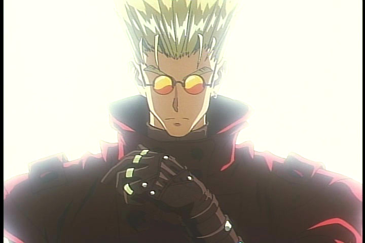
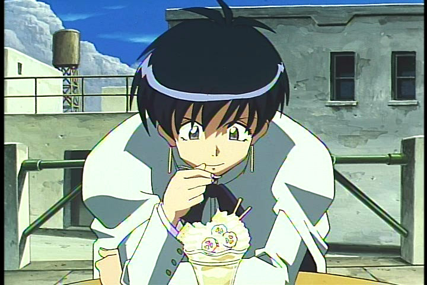
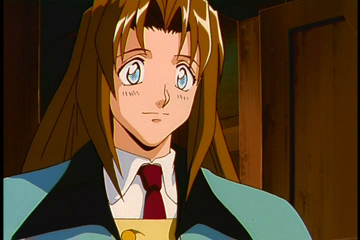
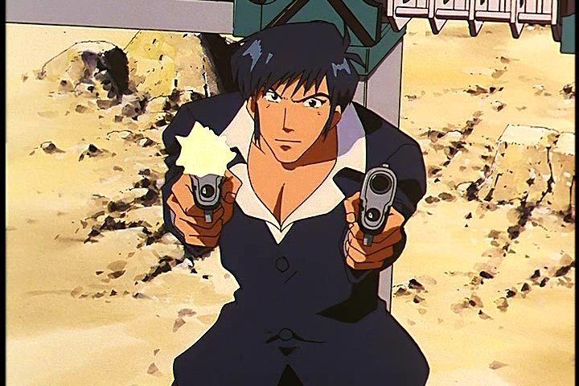
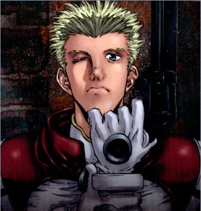
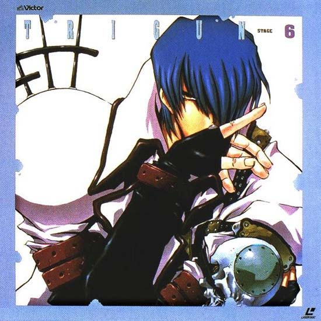

|  | Vash the Stampede is the main character of Trigun. He is known as the "Humanoid Typhoon" and "the Stampede" because everywhere he goes, destruction follows. But that destruction is not always his fault. Vash is actually a genetically engineered plant/human hybrid. He does not age and has a very soft heart, which makes him prone to crying. Vash was engineered alongside a twin brother, Knives. There's a lot of mystery surrounding Vash, most of which gets answered by the end of the series. Overall, he's a tender, goofy guy who loves donuts and women. Vash, being genetically enhanced, is also an incredibly good gun fighter. He can dodge bullets, assess enemies perfectly, and has very advanced intelligence. Despite his excellence at fighting, Vash has vowed never to kill anyone. In every circumstance, Vash tries to find a way of rendering enemies defeated without actually killing them. |
|  | Meryl Strife works for the Bernardelli Insurance Company. Her job is basically to follow Vash around and try to prevent damages caused by the Stampede. At first, Meryl absolutely does not believe that Vash is really Vash. Then, after seeing how skilled Vash is as a fighter, she begins to have a change of heart. Meryl eventually ends up falling for Vash, though she is too strong a person to admit it. |
|  | Milly Thompson is Meryl's side-kick and good friend. She is very tall and almost always cheery. Throughout much of the series, Milly comes across as being very shallow. There are, however, key instances where a great deal of intelligence is revealed to be present in her mind. Indeed, Vash even made a similar comment about Milly's intelligence to Wolfwood on one occasion. Milly is very good-hearted. She's the type of person that is pure and likable. |
|  | Nicholas D. Wolfwood is a traveling priest with a great love for orphans and other misfortuned children. When Wolfwood meets Vash, it's friendship at first sight. Wolfwood hides a very mysterious past. He's an excellent marksman and is almost as good a fighter as Vash. Wolfwood's weapon of choice is a giant cross that has tons of little guns inside of it. The cross can also be used as a machine gun and can be used to fire missiles as well. |
|  | Knives is Vash's twin brother. He's just as capable a fighter and just as intelligent as Vash, only he harbors a great grudge against humanity. Knives makes it his goal to destroy every human being on the desert planet he's stranded on. |
|  | Legato is the head of the Gung-Ho Guns. His goal in Trigun is to make Vash suffer eternal sorrow. Legato is extremely powerful, having the ability to telekinetically make anything move. He uses this ability a great deal, even forcing people to do things against their own will. Legato also was responsible for installing the gun on Vash's arm. |